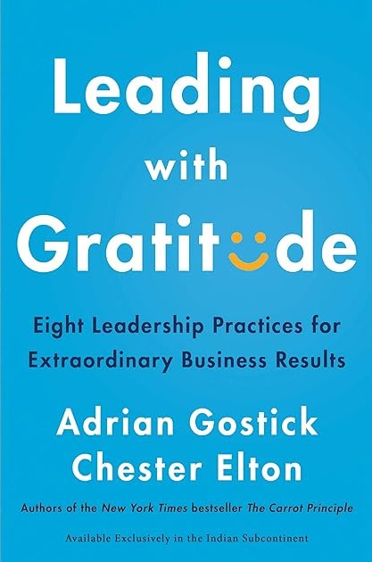
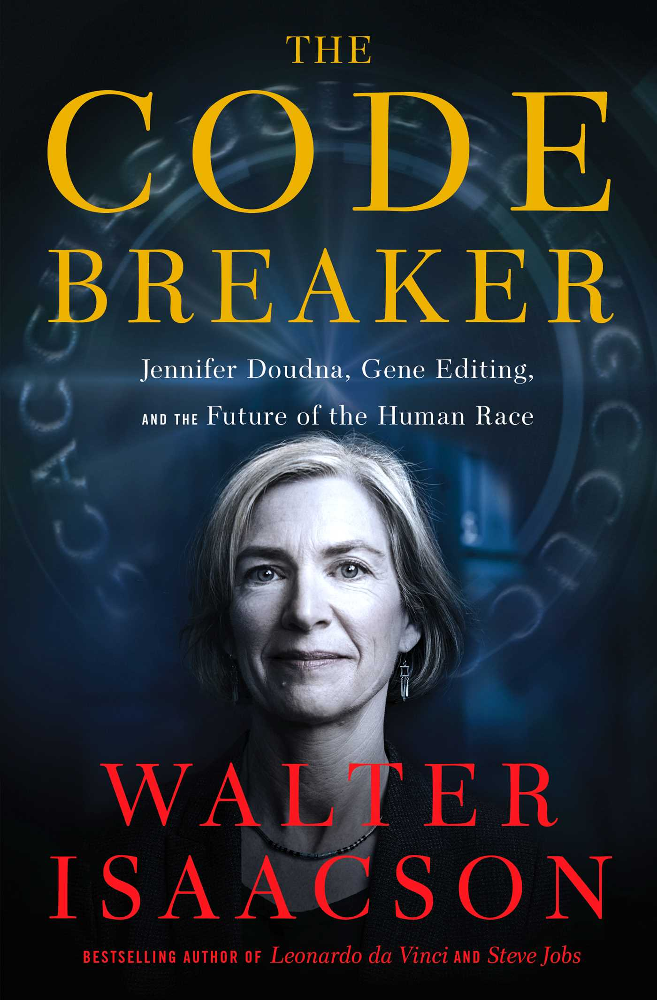

⭐⭐⭐⭐⭐ |
||
The Worlds I See by Dr. Fei Fei Li is a captivating memoir that explores the development of artificial intelligence (AI) and its impact on society, as well as the author's personal journey from China to the US and her passion for computer science. Dr. Li skillfully combines historical facts, scientific concepts, and anecdotes from her own life and career to create a compelling narrative that is both informative and inspiring. She shows how AI has evolved from simple programs to complex systems that can perform tasks such as image recognition, natural language processing, and self-driving cars. She also shares her challenges and achievements as an immigrant, a woman, and a leader in a male-dominated field, and how she balances her work with her family and values.
The book is written in a clear and engaging style that makes it accessible to a wide audience, regardless of their background or familiarity with AI. Many of the accomplishments and people highlighted in the book (ImageNet, AlexNet, ResNet, OpenAI, ...) were experiences I lived through as well. So for me, relevance of the book is was off the charts. But it would still be a must-read for anyone else who has not lived through those experience but is interested in AI, computer science, or memoirs.
⭐⭐⭐ |
||
This book is not a terrible introduction to the topic of quantum supremacy, but it is not a very engaging or satisfying one either. It might be useful for someone who wants a broad overview of the possible applications and implications of quantum computing, but it does not offer much depth or insight into how quantum computers actually work or what challenges they still face. It is more of a catalog of problems than a story of solutions. It is also very respective. After going through each new problem in general, the end is a sentence that says "and one day quantum computers may be able to solve this problem"
I did like the chapter at the end that tells the story of a future quantum computer engineer and what his world is like due to the pervasiveness of quantum computing.
⭐⭐⭐ |
||
The book has many generalizations, clichés, and platitudes -- there is a lack of engaging stories or technical details that would make it more informative and insightful. Suleyman's recommendations for containing or slowing down the impact of AI have been covered better by previous authors. He advocates for global cooperation, regulation, and education, without providing any concrete examples or strategies for how to achieve them, or how to overcome the inevitable conflicts and trade-offs that would arise. He also fails to address the deeper philosophical and moral questions that AI poses, such as the nature of intelligence, consciousness, and human dignity, and the role of human values and agency in shaping the future.
The Coming Wave seems like a missed opportunity as it failed to capture much depth, was repetitive, and failed to capture my full attention.
 ⭐⭐⭐⭐⭐ |
||
Dark Matter is a fast-paced and gripping novel that kept me hooked with its twists and turns, suspense and action, and emotional depth. Crouch skillfully blends science fiction and philosophy, creating a plausible and intriguing scenario that challenges the notions of identity, free will, and fate. The plot is clever and original, with a satisfying and surprising ending that leaves room for reflection and imagination. It is a book that will make you think, feel, and wonder, and that will stay with you long after you finish it.
⭐⭐⭐⭐⭐ |
||
Lane writes with passion, clarity, and humor, using vivid metaphors and examples to illustrate his points. He also acknowledges the limitations and uncertainties of his hypotheses, and invites further research and debate. He does not shy away from technical details, but he also provides helpful summaries and diagrams to guide the reader. The book is not for the faint-hearted, as it requires some background knowledge and concentration, but it is well worth the effort for anyone interested in the big questions of life.
The Vital Question is a stimulating and provocative book that challenges conventional wisdom and opens up new horizons for scientific inquiry. It is also a testament to the beauty and wonder of life, and the remarkable achievements of evolution. Lane shows us that life is not only a product of energy, but also a source of it, and that we are all part of a cosmic story that is still unfolding.
⭐⭐⭐⭐⭐ |
||
The book covers Oppenheimer's life from his privileged and troubled childhood, to his brilliant and eccentric academic career, to his transformation into a charismatic and controversial leader of the Manhattan Project, to his downfall and persecution by the anti-communist crusaders of the Cold War, to his final years as a respected but isolated elder statesman of science. The authors draw on extensive research and interviews to paint a vivid and nuanced portrait of Oppenheimer, who was a complex and contradictory figure. He was a genius and a visionary, but also a flawed and insecure human being. He was a loyal and devoted patriot, but also a former sympathizer and associate of communists. He was a lover of nature and culture, but also a maker of mass destruction. He was a friend and mentor to many, but also a rival and enemy to some.
The book does not shy away from exploring the moral and ethical dilemmas that Oppenheimer faced, and the consequences of his actions and decisions. It shows how he wrestled with the responsibility of unleashing the atomic bomb on Japan, and how he tried to influence the policy and direction of the nuclear age. It also shows how he suffered from the backlash and betrayal of his own government and the FBI, who accused him of being a security risk and a traitor. It also shows how he coped with the personal and professional challenges of his family, health, and reputation.
The book is well-written and engaging, although it can be dense and detailed at times. It is not a light or easy read, but it is a rewarding and enlightening one. It offers a rich and balanced perspective on one of the most influential and controversial figures of the 20th century, and the historical and scientific context in which he lived and worked. It also raises important and relevant questions about the role and impact of science, politics, and ethics in our world today. I highly recommend this book to anyone interested in Oppenheimer, the atomic bomb, or the history of science and society. I also look forward to seeing how Nolan adapts this book into a movie, and how he portrays Oppenheimer and his legacy on the big screen.
⭐⭐⭐⭐⭐ |
||
This book is not just a biography of Borlaug, but also of his ideological rival, William Vogt, a conservationist who warned of the dangers of overpopulation, overconsumption, and environmental degradation. Mann contrasts the two men's visions of how to solve the world's problems: Borlaug (as "The Wizard"), who believed in the power of technology and human ingenuity to increase the supply of food, water, and energy; and Vogt (as "The Prophet") who advocated for reducing the demand for these resources by limiting population growth, consumption, and pollution. Mann traces the origins and impacts of their ideas, and how they influenced the debates and movements on organic farming, genetic engineering, water management, climate change, and energy production.
Norman Borlaug and William Vogt both visited Mexico in the 1940s, but they came away with radically different impressions of the state of the land and the prospects of the people. Vogt, a conservationist and biologist, saw the signs of soil erosion, deforestation, and overpopulation, and concluded that the only way to avoid environmental danger was to reduce human numbers and consumption, and to preserve nature as much as possible. Borlaug, a plant breeder and scientist/engineer, saw the same challenges, but he believed that they could be overcome by applying scientific innovation and improving agricultural productivity. He went on to develop high-yielding varieties of wheat and rice that boosted food production and saved millions from starvation, but he also faced criticism for the unintended environmental and social impacts of his methods, such as the excessive use of fertilizers and pesticides, and the displacement of traditional farmers. The book shows how the followers of Vogt and Borlaug have continued to clash over the best way to balance human needs and environmental limits, often without finding any common ground or understanding.
The book is a remarkable feat of research and storytelling, covering a wide range of topics and history with depth and clarity. Mann does not take sides, but presents both the strengths and weaknesses of the wizard and the prophet approaches, and the challenges and trade-offs they entail. He also introduces other scientists, activists, and thinkers who contributed to the development and dissemination of these approaches, and shows how they interacted and clashed with each other. The book is full of fascinating anecdotes, insights, and controversies that make the reader think and question their own assumptions and preferences.
I highly recommend this book to anyone who is interested in the history and future of environmentalism, agriculture, and development, and who wants to learn more about the two men who shaped these fields: Norman Borlaug, the wizard who fed the world, and William Vogt, the prophet who warned of its limits.
⭐⭐⭐⭐ |
||
I especially appreciated how the author tied the insights into animal movement to innovation in robotics, trying to mimic unique animal movement. Hu explains how researchers have used principles from animal locomotion to create robots that can run fast, survive impacts, squeeze into tight spaces, and even form bridges and rafts. He also discusses the potential applications of these robots for search and rescue, exploration, medicine, and entertainment. Hu makes a compelling case for the value of curiosity-driven research and the importance of interdisciplinary collaboration.
The book is written in a lively and engaging style, with plenty of anecdotes, humor, and illustrations. Hu also provides clear and simple explanations of the scientific concepts and methods involved, making the book accessible to a wide audience. The book is a great read for anyone interested in animals, science, or technology.
⭐⭐⭐⭐⭐ |
||
Stephen A. is one of the biggest faces at ESPN, and arguably the best sports personality in the game today. He is known for his brash and outspoken style, his sharp analysis, and his passion for basketball. But in this book, he reveals a more vulnerable and candid side of himself, as he shares his personal thoughts, fears, and biggest motivations. He doesn't shy away from his mistakes and controversies, but he also gives credit to his family, mentors, and friends who helped him along the way.
He takes us on a journey from his childhood in the Bronx, where he was raised by his hero of a mother and his abusive father, to his college days at Winston-Salem State, where he switched from playing basketball to writing about it, to his rise and fall and rise again at ESPN, where he faced many challenges and opportunities. He also opens up about his near-death experience with COVID and pneumonia, and how it changed his perspective on his work-life balance and his family relationships.
I found his story to be inspiring, honest, and insightful. He shows us how he learned from his failures, how he overcame his stubbornness, and how he grew as a person and a professional. He also shows us his love and respect for his mother, his daughters, and his colleagues, and his gratitude for those who supported him. He also contextualizes some of the moments that I witnessed as a casual sports fan, and gives us a behind the curtain view of his industry and his craft.
I recommend this book to anyone who is interested in sports, media, or personal growth. Stephen A. is a captivating storyteller, and he delivers a powerful and entertaining memoir that will make you laugh, cry, and think. He pulls no punches and holds nothing back, and he invites us to join him in his world.
|  ⭐⭐⭐⭐ |
||
The authors draw on extensive research and interviews with successful leaders from various industries to show how gratitude can energize, heal, and inspire teams. They also debunk some common myths and misconceptions about gratitude, such as that it is soft, rare, or insincere. They offer dozens of examples and tips on how to express gratitude in meaningful and effective ways, tailored to different situations, personalities, and values. They also emphasize the importance of being timely, specific, and visible with gratitude, and of encouraging peer-to-peer recognition.
I especially liked the chapter on how gratitude can help overcome the negativity bias, which is the tendency to focus more on problems and threats than on positive events and opportunities. The authors suggest some simple strategies to counteract this bias, such as keeping a gratitude journal, celebrating wins, and reframing challenges as learning opportunities. They also share some inspiring stories of how gratitude helped leaders and teams overcome adversity, change, and crisis.
This book is not only informative and insightful, but also engaging and easy to read. The authors use a conversational tone and a lot of humor and anecdotes to illustrate their points. They also include a gratitude assessment, a gratitude action plan, and a gratitude challenge at the end of the book, to help readers apply what they learned and measure their progress.
I highly recommend this book to anyone who wants to improve their leadership skills, their team performance, and their personal well-being. I think this book would be a great resource for a book study or a training session, as it is positive, uplifting, and relevant to any workplace. I plan to buy a copy for each of my team members and share some of the best practices and insights from this book with them. I am confident that leading with gratitude will make a difference in our work and our lives.
⭐⭐⭐⭐ |
||
Webb presents three scenarios for how AI might play out over the next 50 years, based on different levels of cooperation and regulation among the Big Nine, the governments, and the public. In the optimistic scenario, a global coalition of governments and tech companies, called GAIA (the Global Alliance on Intelligence Augmentation), is formed to ensure that AI is used for the common good, respecting human rights, diversity, and ethics. In the pragmatic scenario, the Big Nine continue to pursue their own interests, with little oversight or accountability, leading to a digital caste system, social polarization, and economic inequality. In the catastrophic scenario, China dominates the world with its AI-powered authoritarianism, surveillance, and militarism, while the US and its allies become the Digitally Occupied States of America, losing their sovereignty, freedom, and dignity.
Webb's book is a wake-up call for anyone who cares about the future of humanity and democracy in the age of AI. She offers a compelling and comprehensive analysis of the current state and potential risks of AI, as well as a clear and actionable roadmap for how to steer it in a positive direction. She challenges the Big Nine, the governments, and the public to take responsibility and action to shape the future of AI, before it shapes us.
Since reading the book, I was pleased to learn that some movement towards the creation of GAIA has begun, thanks mainly to Microsoft and OpenAI. Microsoft, which Webb was very wrong in her predictions on, has emerged as a major player and leader in AI, investing in research, innovation, and ethics. OpenAI (which Web also did not mention), has also been a pioneer and advocate for creating and sharing beneficial AI for humanity. Together, OpenAI and Microsoft have launched a partnership to develop and deploy a large-scale AI system, called GPT-4, ChatGPT..., that can generate natural language and answer complex questions. They have also committed to ensuring that GPT-4, ChatGPT, and future models are aligned with the principles and values , similar to the authors vision of GAIA and that it is accessible and accountable to the public. This is a hopeful sign that the optimistic scenario is not impossible, and that there is still time and opportunity to shape the future of AI for the better.
⭐⭐⭐⭐ |
||
The book is well-researched and engaging, combining historical analysis, industry insights, and visionary speculation. The author covers a wide range of topics, from the origins and definitions of the metaverse, to the current state and future trends of immersive technologies, to the ethical and legal implications of creating and regulating a digital reality. He also addresses some of the common misconceptions and criticisms of the metaverse, such as its feasibility, desirability, and accessibility. He makes a compelling case for why the metaverse is inevitable, desirable, and beneficial, while also acknowledging the risks and uncertainties involved.
I really like how the author included Microsoft as one of the key players in the metaverse space. Microsoft has been developing and acquiring technologies and platforms that enable and enhance the metaverse, such as Azure, HoloLens, Minecraft, LinkedIn and Bethesda. Microsoft's role in the metaverse is likely to be significant and multifaceted, as it seeks to leverage its existing assets and capabilities, as well as to innovate and collaborate with others, to create and capture value in the metaverse.
 ⭐⭐⭐⭐⭐ |
||
TThe book is laugh out load funny, engaging, and full of scientific details that make the story plausible and fascinating. Engineering wise the main characters are resourceful, curious, friendly, and ingenious. Sometimes, however, the engineering is taken to the extreme of almost being "MacGyver-ish" The book is also full of suspense, action, and twists.
TThe book that made me laugh, cry, and cheer reminds me of the importance of curiosity, creativity, and courage in the face of adversity. It is a book that you won't want to put down, and that you will want to share with others. It is a book that deserves all the praise and acclaim it has received, and more.
⭐⭐⭐⭐⭐ |
||
The book does not shy away from exposing the injustices and inequalities that shaped the lives of Henrietta Lacks and her descendants, as well as the racism, sexism and classism that pervaded the scientific community and the health care system. I learned so much about the consequences of medical ethics (or lack of) in the 50's for the family in the context of the injustice and racism of the time to now. The book also raises important questions about the ownership, consent and privacy of human tissue, and the moral and legal implications of using it for research and profit. The book does not offer easy answers, but rather invites the reader to reflect and engage with the issues.
The Immortal Life of Henrietta Lacks is a remarkable book that honors the memory of a remarkable woman and her immortal contribution to humanity. It is also a powerful reminder of the need for compassion, justice and respect in science and medicine, and the value of every human life. I highly recommend this book to anyone interested in science, history, ethics, or simply a good enthralling story.
|  ⭐⭐⭐⭐ |
||
The book is well-researched and informative, but does have a lot of author bias. Presumably due to his biography of Steve Jobs, he just there is tons of Jobs and Mac worship in this book about biology. Isaacson does a good job of explaining the complex science behind CRISPR, but he also tends to go into too much detail and repeat the same information and anecdotes several times. He also inserts himself into the narrative frequently, which can be distracting and unnecessary. The book could have benefited from more editing and condensing, as it is over 500 pages long.
The book follows Doudna and Charpentier all the way to their Nobel Prize in Chemistry in 2020 for their work on CRISPR. It also raises important ethical and social questions about the implications and applications of gene editing, such as its potential to cure diseases, enhance traits, create designer babies, and alter the environment. It also reveals how the Covid-19 pandemic has accelerated the development and use of CRISPR-based tests and vaccines, and how the scientific community has collaborated and competed in this unprecedented crisis.
⭐⭐⭐⭐ |
||
In Chapter 6, I was shocked to learn that Faraday had to give a lecture on short notice when another lecturer cancelled. He ran out of material from the other lecturer’s notes and improvised with some of his own ideas. He discussed electric fields and then amazingly speculated about gravitational fields. He wondered if gravity was related to electricity and other natural forces. This was a remarkable insight that anticipated Einstein’s general relativity by decades.
The book is rich and comprehensive, covering their lives from their humble origins to their scientific triumphs and honors, as well as their personal struggles, relationships, and beliefs. The book also explains their groundbreaking experiments and theories in a clear and accessible way. The book shows how Faraday and Maxwell changed the fields of electricity, magnetism, light, optics, chemistry, thermodynamics, mechanics, fluid dynamics, elasticity, color theory, kinetic theory of gases, electromagnetism, electromagnetic waves, and relativity.
I laughed out loud to hear Maxwell boast of his equations as "Great Guns" to his friends.
The book also shows how they influenced other scientists such as Ampere, Ohm, Volta, Gauss, Kirchhoff, Hertz Einstein and Feynman. The book is a must-read for anyone who wants to learn more about these two remarkable men who shaped our modern world with their curiosity and creativity.